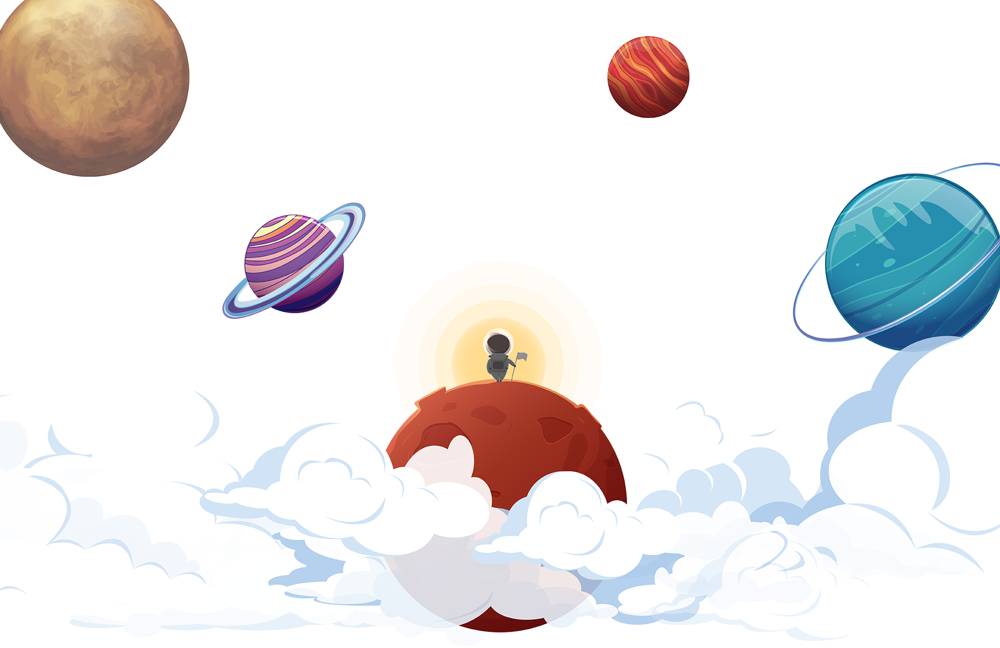
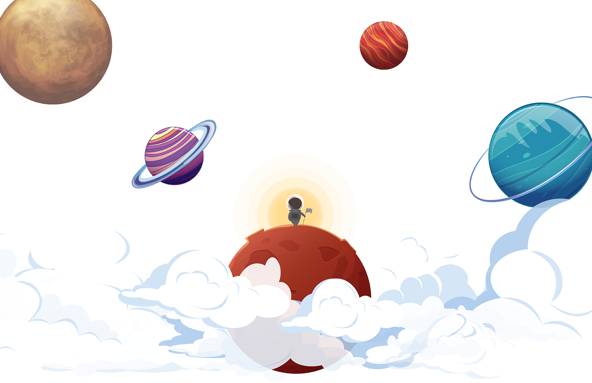
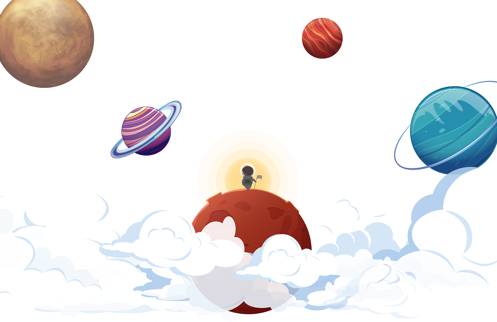
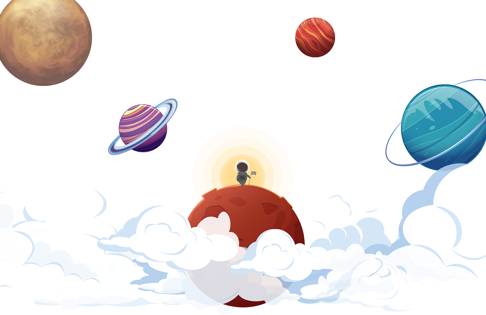

 

Cuộc chạy đua vào vũ trụ hay cuộc chạy đua vào không gian là cuộc cạnh tranh thám hiểm vũ trụ giữa Hoa Kỳ và Liên Xô, kéo dài từ khoảng 1957 đến 1975. Nó liên quan đến các nỗ lực thám hiểm không gian bằng vệ tinh nhân tạo và việc đưa con người vào vũ trụ và lên Mặt Trăng. Mặc dù bắt nguồn từ các vấn đề về kỹ thuật tên lửa và không khí chính trị quốc tế căng thẳng theo sau Chiến tranh thế giới thứ hai, cuộc chạy đua vào vũ trụ chỉ chính thức bắt đầu sau khi Liên Xô phóng vệ tinh Sputnik 1 lên quỹ đạo vào ngày 4 tháng 10 năm 1957. Cuộc chạy đua này giống như cuộc chạy đua vũ trang. Cuộc tranh đua này đã trở thành một phần quan trọng của cạnh tranh về văn hóa, kỹ thuật và ý thức hệ giữa Hoa Kỳ và Liên Xô trong Chiến tranh Lạnh. Kỹ thuật vũ trụ đã trở thành một khía cạnh quan trọng trong cuộc đối đầu này, bởi các ứng dụng quân sự cũng như tác động tâm lý đối với công chúng.
Yuri Alekseyevich Gagarin (tiếng Nga: Ю́рий Алексе́евич Гага́рин; 1934–1968) là một phi công và phi hành gia người Liên Xô. Ông được ghi nhận là người đầu tiên trong lịch sử nhân loại thực hiện chuyến bay vào vũ trụ, ngày 12 tháng 4 năm 1961 trên tàu vũ trụ Phương Đông 1 (Vostok 1).
Gagarin trở thành một người nổi tiếng trên toàn thế giới, và được trao tặng rất nhiều huân chương và các danh hiệu cao quý, đặc biệt là danh hiệu Anh hùng Liên bang Xô-viết. Vostok 1 là tàu vũ trụ duy nhất ông tham gia bay, nhưng ông cũng từng thuộc phi hành đoàn dự phòng cho sứ mệnh Soyuz 1 (đã kết thúc trong một vu nổ kinh hoàng). Sau này sứ mệnh lịch sử Vostok 1, ông trở thành Giám đốc đào tạo của Trung tâm đào tạo Phi hành gia), nằm ở ngoại vi thủ đô Moskva. Về sau, trung tâm này được đặt theo tên ông. Gagarin mất năm 1968, khi chiếc máy bay MiG-15 ông đang lái gặp tai nạn. Huân chương Yuri Gagarin ra đời như một sự vinh danh ông.
Apollo 11 là chuyến bay không gian đã hạ cánh cùng con người đầu tiên đáp xuống Mặt Trăng, hai nhà phi hành gia Hoa Kỳ là Neil Armstrong và Buzz Aldrin, vào ngày 20 tháng 7, năm 1969, vào lúc 20:18 UTC. Armstrong trở thành người đầu tiên bước chân lên bề mặt của Mặt Trăng sáu giờ sau vào ngày 21 tháng 7 vào lúc 02:56 UTC. Armstrong dành hai tiếng rưỡi bên ngoài con tàu không gian, trong khi Aldrin có ít thời gian hơn một chút và cùng nhau, họ thu thập 47.5 pounds (21.5 kg) Đá Mặt Trăng cho chuyến trở về Trái Đất. Thành viên thứ ba của Phi hành đoàn, Michael Collins, lái Mô-đun Điều Khiển một mình quanh quỹ đạo của Mặt Trăng cho đến khi Armstrong và Aldrin quay về Mô-đun Điều Khiển chỉ một ngày trước khi họ phải bắt đầu hành trình quay về Trái Đất.
Neil Alden Armstrong (5 tháng 8 năm 1930 – 25 tháng 8 năm 2012) là một phi hành gia và kỹ sư kỹ thuật hàng không vũ trụ người Mỹ, và cũng là người đầu tiên đặt chân lên Mặt Trăng. Ông cũng là một phi công hải quân, phi công thử nghiệm, và giáo sư đại học.
Vào ngày 20 tháng 7 năm 1969, Armstrong và phi công Buzz Aldrin của Mô-đun Mặt Trăng (LM) của tàu Apollo 11 đã trở thành những người đầu tiên đáp xuống Mặt Trăng, và ngày hôm sau họ dành hai tiếng rưỡi bên ngoài tàu vũ trụ trong khi Michael Collins vẫn ở trên quỹ đạo mặt trăng ở mô-đun chỉ huy (CM) của nhiệm vụ. Khi Armstrong bước lên bề mặt Mặt Trăng, ông đã phát biểu một câu nói nổi tiếng: "Đây là bước đi nhỏ bé của một con người, nhưng là bước tiến khổng lồ của nhân loại." Cùng với Collins và Aldrin, Armstrong đã được Tổng thống Richard Nixon trao tặng Huân chương Tự do Tổng thống. Tổng thống Jimmy Carter đã trao tặng cho Armstrong Huân chương Danh dự Không gian Quốc hội năm 1978, và Armstrong và các đồng đội cũ của ông đã nhận được Huy chương Vàng Quốc hội năm 2009.


Ngày 12 tháng 5 năm 1961 : Yuri Gagarin Liên Xô trên chuyến bay Vostok 1
Ngày 5 tháng 5 năm 1961 : Alan Shepard Hoa Kỳ trên chuyến bay MR-3
Ngày 2 tháng 3 năm 1978 : Vladimír Remek Tiệp Khắc trên chuyến bay Soyuz 28
Ngày 27 tháng 6 năm 1978 : Mirosław Hermaszewski Ba Lan trên chuyến bay Soyuz 30
Ngày 26 tháng 8 năm 1978 : Sigmund Jähn Đông Đức trên chuyến bay Soyuz 31
Ngày 10 tháng 4 năm 1979 : Georgi Ivanov Bulgaria trên chuyến bay Soyuz 33
Ngày 26 tháng 5 năm 1980 : Bertalan Farkas Hungary trên chuyến bay Soyuz 36
Ngày 23 tháng 7 năm 1980 : Phạm Tuân Việt Nam trên chuyến bay Soyuz 37
Ngày 18 tháng 9 năm 1980 : Arnaldo Tamayo Méndez Cuba trên chuyến bay Soyuz 36
Ngày 22 tháng 3 năm 1981 : Jügderdemidiin Gürragchaa Mông Cổ trên chuyến bay Soyuz 37
Ngày 14 tháng 5 năm 1981 : Dumitru Prunariu România trên chuyến bay Soyuz 36
Ngày 24 tháng 6 năm 1982 : Jean-Loup Chrétien Pháp trên chuyến bay Soyuz 37
Ngày 28 tháng 11 năm 1983 : Ulf Merbold Tây Đức trên chuyến bay Soyuz 36
Ngày 3 tháng 4 năm 1984 : Rakesh Sharma Ấn Độ trên chuyến bay Soyuz 37
Ngày 5 tháng 10 năm 1984 : Marc Garneau Canada trên chuyến bay Soyuz 36
Ngày 17 tháng 6 năm 1985 : Salman al-Saud Ả Rập Xê Út trên chuyến bay Soyuz 37
Ngày 30 tháng 10 năm 1985 : Wubbo Ockels Hà Lan trên chuyến bay Soyuz 36
Ngày 26 tháng 11 năm 1985 : Rodolfo Neri Vela México trên chuyến bay Soyuz 37
Ngày 22 tháng 7 năm 1987 : Muhammed Faris Syria trên chuyến bay Soyuz 36
Ngày 29 tháng 8 năm 1988 : Abdul Ahad Mohmand Afghanistan trên chuyến bay Soyuz 37
Ngày 2 tháng 12 năm 1990 : Toyohiro Akiyama Nhật Bản trên chuyến bay Vostok 1
Ngày 18 tháng 5 năm 1991 : Helen Sharman Vương quốc Liên hiệp Anh và Bắc Ireland trên chuyến bay Vostok 1
Ngày 2 tháng 10 năm 1991 : Franz Viehböck Áo trên chuyến bay Vostok 1
Ngày 17 tháng 3 năm 1992 : Alexandr Kaleri và Alexandr Viktorenko Nga trên chuyến bay Vostok 1
Ngày 24 tháng 3 năm 1992 : Dirk Frimout Bỉ trên chuyến bay Vostok 1
Ngày 31 tháng 7 năm 1992 : Franco Malerba Ý trên chuyến bay Vostok 1
Ngày 31 tháng 7 năm 1992 : Claude Nicollier Thụy Sĩ trên chuyến bay Vostok 1
Ngày 1 tháng 7 năm 1993 : Talgat Musabayev Kazakhstan trên chuyến bay Vostok 1
Ngày 19 tháng 11 năm 1997 : Leonid Kadenyuk Ukraina trên chuyến bay Vostok 1
Ngày 29 tháng 10 năm 1998 : Pedro Duque Tây Ban Nha trên chuyến bay Vostok 1
Ngày 20 tháng 2 năm 1999 : Ivan Bella Slovakia trên chuyến bay Vostok 1
Ngày 25 tháng 4 năm 2002 : Mark Shuttleworth Nam Phi trên chuyến bay Vostok 1
Ngày 6 tháng 1 năm 2003 : Ilan Ramon Israel trên chuyến bay Vostok 1
Ngày 15 tháng 10 năm 2003 : Dương Lợi Vĩ Trung Quốc trên chuyến bay Vostok 1
Ngày 30 tháng 3 năm 2006 : Marcos Pontes Brasil trên chuyến bay Vostok 1
Ngày 18 tháng 9 năm 2006 : Anousheh Ansari Iran trên chuyến bay Vostok 1
Ngày 10 tháng 12 năm 2006 : Christer Fuglesang Thụy Điển trên chuyến bay Vostok 1
Ngày 10 tháng 10 năm 2007 : Sheikh Muszaphar Shukor Malaysia trên chuyến bay Vostok 1
Ngày 8 tháng 4 năm 2008 : Yi So-yeon Hàn Quốc trên chuyến bay Vostok 1
Ngày 2 tháng 9 năm 2015 : Andreas Mogensen Đan Mạch trên chuyến bay Vostok 1
Ngày 2 tháng 9 năm 2015 : Aidyn Aimbetov Kazakhstan trên chuyến bay Vostok 1
DESIGN BY BRIAN